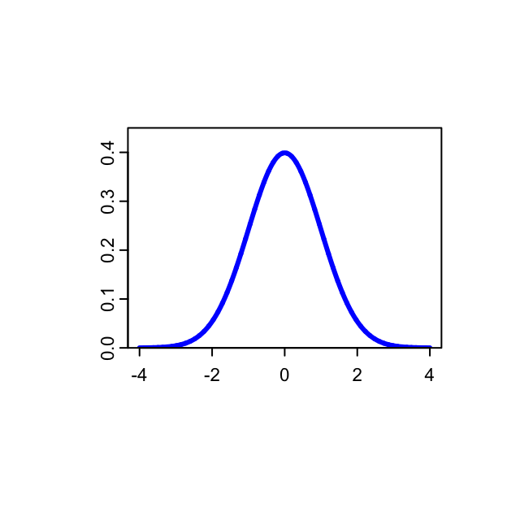
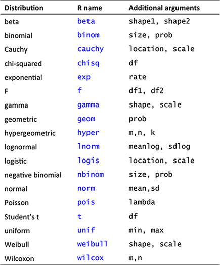
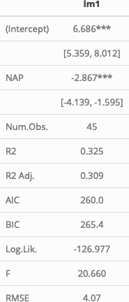
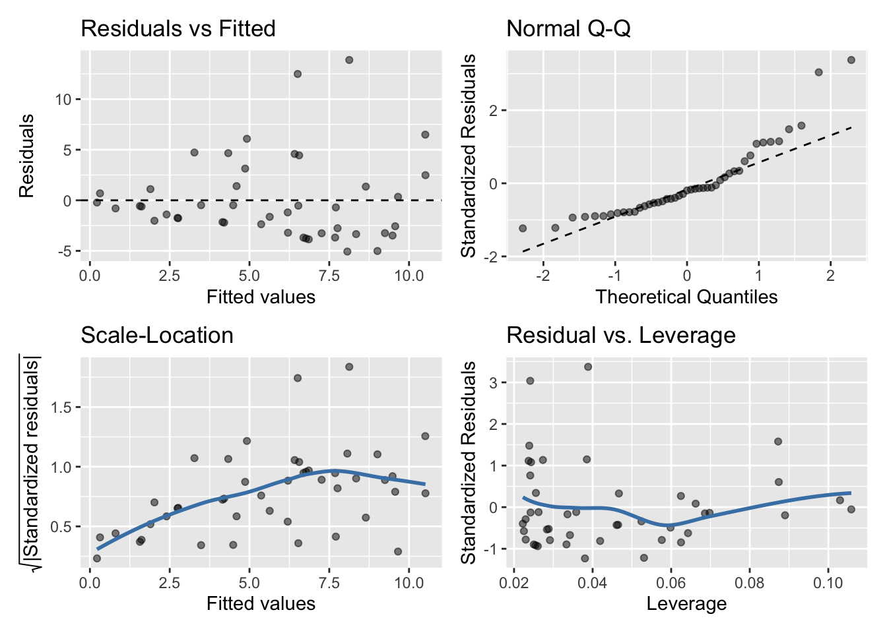
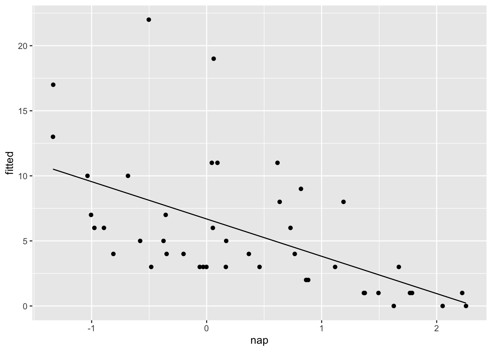
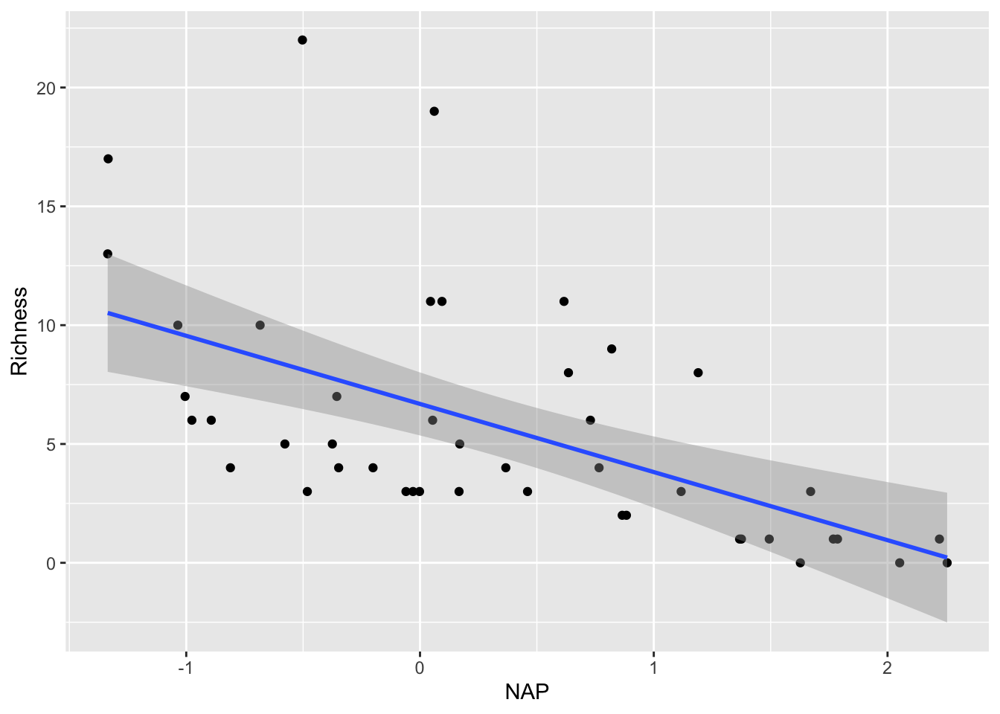
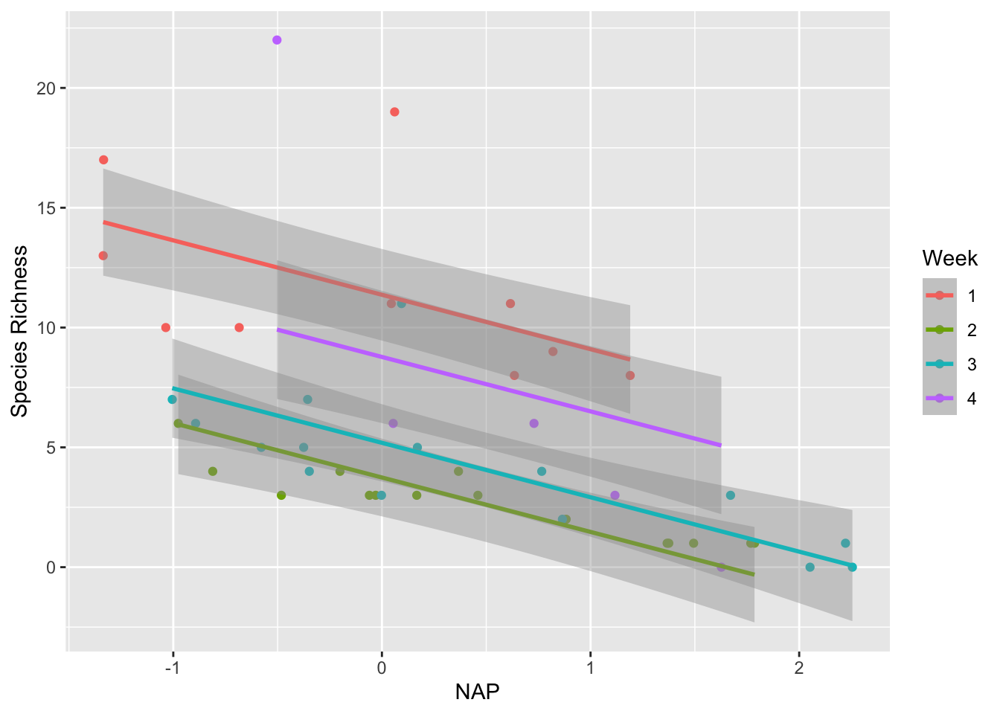
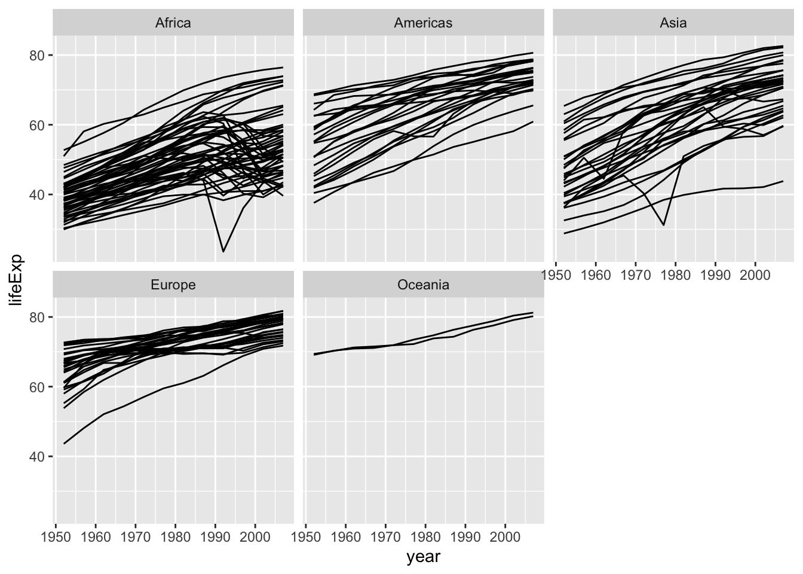
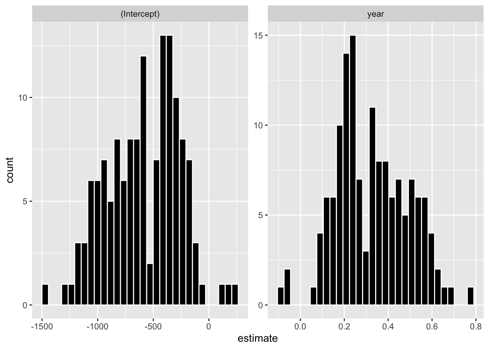
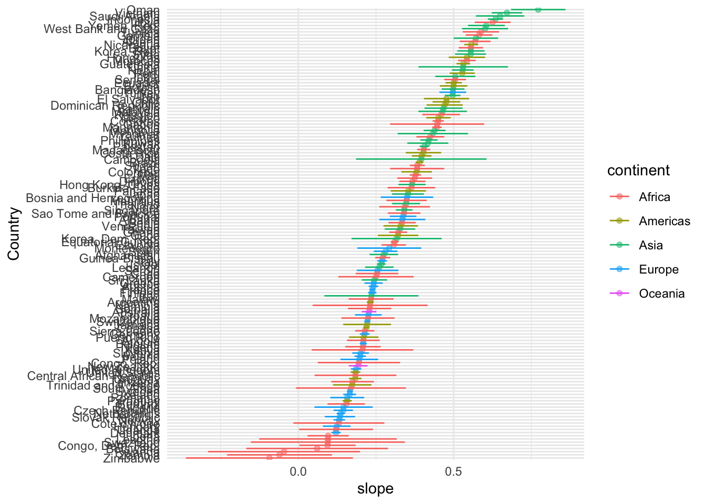

Bio Stats II : Lab 3
Acknowledgements: Punt & Branch Labs (U Washington)
Lab schedule
1/22: Introduction to R and R Studio, working with data
1/29: Visualizing data
2/05: Probability, linear modeling
2/12: Data wrangling, model summaries
2/19: Simulation, Resampling
2/26: Iteration
3/05: Creating functions, debugging
3/19: Flex: automated reporting & Quarto
4/02: working with Spatial data
Recommended reading
An introduction to R (Venables et al.)
– http://cran.r-project.org/doc/manuals/R-intro.pdf - Today’s material: Chapters 8, 11.
Probability distributions in R
R includes a set of probability distributions that can be used to simulate and model data.
If the function for the probability model is named xxx
pxxx: the cumulative distribution \(P(X \leq x)\)
dxxx: the probability distribution/density function \(f(x)\)
qxxx: the quantile \(q\), the smallest \(x\) such that \(P(X \leq x) > q\)
rxxx: generate a random variable from the modelxxx
Probability distributions in R

Standard normal distribution
(\(\mu=0\), \(\sigma^2=1\))
Functions for normal distribution
Values of \(x\) for different quantiles
qnorm(p, mean=0, sd=1, lower.tail=TRUE, log.p=FALSE)
> quants <- qnorm(c(0.01,0.025,0.05,0.95,0.975,0.99))
> round(quants,2)
[1] -2.33 -1.96 -1.64 1.64 1.96 2.33\(P(X \leq x)\)
pnorm(q, mean=0, sd=1, lower.tail=TRUE, log.p=FALSE)
> pnorm(quants)
[1] 0.010 0.025 0.050 0.950 0.975 0.990Functions for normal distribution
Density (probability ‘mass’ per unit value of \(x\))
> dnorm(quants, mean = 0, sd = 1)
[1] 0.02665214 0.05844507 0.10313564 0.10313564 0.05844507 0.02665214Generating standard normal random variables
> rnorm(n=10, mean = 0, sd = 1)
[1] 1.6548653 2.0257808 0.0533452 0.3920186 -0.8448156 0.4098615
[7] -1.1995874 0.8198374 -0.5920983 1.2469063Generating random numbers
Often a good idea to use set.seed() and save the script detailing which number was used.
This ensures you can exactly repeat your results.
> set.seed(42)
> rnorm(3)
[1] 1.3709584 -0.5646982 0.3631284
> rnorm(3)
[1] 0.6328626 0.4042683 -0.1061245
> set.seed(42)
> rnorm(3)
[1] 1.3709584 -0.5646982 0.3631284
> rnorm(3)
[1] 0.6328626 0.4042683 -0.1061245The sample() function
To generate random numbers from discrete sets of values:
- With or without replacement
- Equal or weighted probability
Extremely useful function that underlies many modern statistical techniques:
- Resampling
- Bootstrapping
- Markov-chain Monte-Carlo (MCMC)
e.g. Roll 10 dice
> sample(1:6, size = 10, replace = TRUE)
[1] 4 1 5 6 4 2 2 3 1 1Pick 3 species of bear
> bears <- c("American Black", "Asian Black", "Brown",
+ "Panda", "Polar", "Sloth", "Spectacled", "Sun")
> sample(bears, size = 3, replace = FALSE)
[1] "Brown" "Panda" "Polar"Lab Exercise 1/3
Within your class Project, open a new R markdown file. Save it. (name it lastname_lab3.Rmd or something similar). At the top of the script, add comments with your name and lab 3. Work in pairs or individually.
- Generate 1,000 random normal numbers with mean 24 and standard deviation 10. Find the proportion of those random numbers that are \(\geq2\) standard deviations from the sample mean.
- Flip a (fair) coin six times.
- Find the probability of getting six heads on those six flips (i.e. \(P(X=6)\) given \(n=6\)).
- How much more likely is it to get three heads than six?
- For a standard normal random variable, find the number \(x\) such that \(P(-x \leq X \leq x) = 0.24\).
- The mean rate of arrival of alewives at a weir is 3.5 per hour. Plot the probability distribution function for the number of alewife arrivals in an hour.
- Find the 95% confidence interval for the number of alewives arriving per day.
Linear models in R
Recall linear regression model:
\[y_i = \displaystyle\sum_{j=0}^{p}\beta_j x_{ij} + \varepsilon_i \text{ , } \varepsilon_i \sim N(0,\sigma^2) \text{ , } i=1,\dots,n\]
In matrix form: \(y = X\beta + \varepsilon\)
Model formulae in R, \(y \sim x\), try ?formula
Linear models, lm()
The basic function for fitting ordinary multiple models is lm()
fitted.model <- lm(formula, data = data.frame)
e.g. species richness on beaches (Zuur Chapters 5 & 27)
> RIKZ <- read_table(file = "../data/RIKZ.txt")
> RIKZ <- RIKZ |>
+ mutate(Richness = rowSums(RIKZ[,2:76]>0)) |>
+ select(Richness, 77:89)
> RIKZ_lm1 <- lm(Richness ~ NAP, data = RIKZ)Extracting model information
The value of lm() is a fitted model object.
- a list of results of class lm.
Information about the fitted model can be extracted, displayed, plotted, using some generic functions, inlcuding:
anova(object1,object2)Compares a submodel with an outer model and produces an analysis of variance tablecoef(object)Extract the regression coefficient
deviance(object)Residual sum of squares
formula(object)Extract the model formula
plot(object)Produce four plots, showing residuals, fitted values and some diagnostics
predict(object, newdata=data.frame)Model predictions on new data
residuals(object)orresid(object)Extract the matrix of residuals
step(object)forward or backward model selection using AIC
summary(object)Print a comprehensive summary of the results
vcov(object)Return variance-covariance matrix of main parameters
Summary objects
summary(lm1)
Call:
lm(formula = Richness ~ NAP, data = RIKZ)
Residuals:
Min 1Q Median 3Q Max
-5.0675 -2.7607 -0.8029 1.3534 13.8723
Coefficients:
Estimate Std. Error t value Pr(>|t|)
(Intercept) 6.6857 0.6578 10.164 5.25e-13 ***
NAP -2.8669 0.6307 -4.545 4.42e-05 ***
---
Signif. codes: 0 '***' 0.001 '**' 0.01 '*' 0.05 '.' 0.1 ' ' 1
Residual standard error: 4.16 on 43 degrees of freedom
Multiple R-squared: 0.3245, Adjusted R-squared: 0.3088
F-statistic: 20.66 on 1 and 43 DF, p-value: 4.418e-05broom helper functions
broom::tidy()
> library(broom)
> tidy(RIKZ_lm1, conf.int = TRUE)
# A tibble: 2 × 7
term estimate std.error statistic p.value conf.low conf.high
<chr> <dbl> <dbl> <dbl> <dbl> <dbl> <dbl>
1 (Intercept) 6.69 0.658 10.2 5.25e-13 5.36 8.01
2 NAP -2.87 0.631 -4.55 4.42e- 5 -4.14 -1.59broom::glance()
> glance(RIKZ_lm1)
# A tibble: 1 × 12
r.squared adj.r.squared sigma statistic p.value df logLik AIC BIC
<dbl> <dbl> <dbl> <dbl> <dbl> <dbl> <dbl> <dbl> <dbl>
1 0.325 0.309 4.16 20.7 0.0000442 1 -127. 260. 265.
# ℹ 3 more variables: deviance <dbl>, df.residual <int>, nobs <int>{modelsummary}
The {modelsummary} package provides a wealth of options for creating publication-quality summary tables from fitted model objects, with bindings for most of the types of models we are using in this class.
There are lots of options….
> library(modelsummary)
> modelsummary(list(lm1 = RIKZ_lm1),
+ statistic = "conf.int",
+ stars = TRUE)
Are model assumptions met?
In the MASS library there are many functions.
Are samples independent? (Sample design.)
Residuals normally distributed?
- Histograms, qq-plots: qqplot() and qqline()
- Kolmogorov-Smirnov normality test: ks.test()
- Shapiro-Wilk normality test: shapiro.test()
Similar variance among samples?
- Boxplots
- Bartlett’s test for equal variance: bartlett.test()
- Fligner-Killeen test for equal variance: fligner.test()
Checking assumptions
Model assumptions can be evaluated by plotting the model object.
> plot(RIKZ_lm1)
> # OR
> library(gglm)
> gglm(RIKZ_lm1)> gglm(RIKZ_lm1)
Extracting model fit & residuals
broom::augment()
> RIKZ_lm1_aug <- augment(RIKZ_lm1, se_fit = )
> glimpse(RIKZ_lm1_aug)
Rows: 45
Columns: 8
$ Richness <dbl> 11, 10, 13, 11, 10, 8, 9, 8, 19, 17, 6, 1, 4, 3, 3, 1, 3, 3…
$ NAP <dbl> 0.045, -1.036, -1.336, 0.616, -0.684, 1.190, 0.820, 0.635, …
$ .fitted <dbl> 6.556653, 9.655722, 10.515778, 4.919680, 8.646589, 3.274107…
$ .resid <dbl> 4.4433465, 0.3442783, 2.4842223, 6.0803197, 1.3534106, 4.72…
$ .hat <dbl> 0.02432839, 0.06623475, 0.08738853, 0.02387714, 0.04669014,…
$ .sigma <dbl> 4.151533, 4.208801, 4.189991, 4.100641, 4.203722, 4.142941,…
$ .cooksd <dbl> 0.0145788938, 0.0002601525, 0.0187094818, 0.0267685231, 0.0…
$ .std.resid <dbl> 1.08136537, 0.08564557, 0.62511744, 1.47940908, 0.33321661,…Extracting model fit & residuals
> RIKZ_lm1_aug <- augment(RIKZ_lm1,
+ se_fit = TRUE)
> glimpse(RIKZ_lm1_aug)
Rows: 45
Columns: 9
$ Richness <dbl> 11, 10, 13, 11, 10, 8, 9, 8, 19, 17, 6, 1, 4, 3, 3, 1, 3, 3…
$ NAP <dbl> 0.045, -1.036, -1.336, 0.616, -0.684, 1.190, 0.820, 0.635, …
$ .fitted <dbl> 6.556653, 9.655722, 10.515778, 4.919680, 8.646589, 3.274107…
$ .se.fit <dbl> 0.6488474, 1.0706040, 1.2297395, 0.6428018, 0.8988733, 0.81…
$ .resid <dbl> 4.4433465, 0.3442783, 2.4842223, 6.0803197, 1.3534106, 4.72…
$ .hat <dbl> 0.02432839, 0.06623475, 0.08738853, 0.02387714, 0.04669014,…
$ .sigma <dbl> 4.151533, 4.208801, 4.189991, 4.100641, 4.203722, 4.142941,…
$ .cooksd <dbl> 0.0145788938, 0.0002601525, 0.0187094818, 0.0267685231, 0.0…
$ .std.resid <dbl> 1.08136537, 0.08564557, 0.62511744, 1.47940908, 0.33321661,…Extracting model fit & residuals
> RIKZ_lm1_aug <- augment(RIKZ_lm1,
+ interval = "confidence")
> glimpse(RIKZ_lm1_aug)
Rows: 45
Columns: 10
$ Richness <dbl> 11, 10, 13, 11, 10, 8, 9, 8, 19, 17, 6, 1, 4, 3, 3, 1, 3, 3…
$ NAP <dbl> 0.045, -1.036, -1.336, 0.616, -0.684, 1.190, 0.820, 0.635, …
$ .fitted <dbl> 6.556653, 9.655722, 10.515778, 4.919680, 8.646589, 3.274107…
$ .lower <dbl> 5.24812804, 7.49664302, 8.03577164, 3.62334705, 6.83383871,…
$ .upper <dbl> 7.865179, 11.814800, 12.995784, 6.216014, 10.459340, 4.9208…
$ .resid <dbl> 4.4433465, 0.3442783, 2.4842223, 6.0803197, 1.3534106, 4.72…
$ .hat <dbl> 0.02432839, 0.06623475, 0.08738853, 0.02387714, 0.04669014,…
$ .sigma <dbl> 4.151533, 4.208801, 4.189991, 4.100641, 4.203722, 4.142941,…
$ .cooksd <dbl> 0.0145788938, 0.0002601525, 0.0187094818, 0.0267685231, 0.0…
$ .std.resid <dbl> 1.08136537, 0.08564557, 0.62511744, 1.47940908, 0.33321661,…Extracting model fit & residuals
> RIKZ_lm1_aug |>
+ janitor::clean_names() |>
+ ggplot() +
+ aes(x = nap, y = fitted) +
+ geom_line() +
+ geom_point(aes(x = nap, y= richness))
Fitting models directly on plots
> ggplot(RIKZ, aes(x = NAP, y = Richness)) +
+ geom_point() +
+ geom_smooth(method = "lm")
`geom_smooth()` using formula = 'y ~ x'
Building and Comparing models
> library(moderndive)
> ggplot(RIKZ) +
+ aes(x = NAP, y = Richness, color = factor(week)) +
+ geom_point() +
+ labs(x = "NAP", y = "Species Richness",
+ color = "Week") +
+ geom_parallel_slopes(se = TRUE)
Building and Comparing models
An alternative model for the RIKZ species richness is:
> RIKZ_lm2 <- lm(Richness ~ NAP + factor(week), data = RIKZ)
> #Can also create this model using the `update()` function:
> RIKZ_lm2 <- update(RIKZ_lm1, .~. + factor(week))Compare models with AIC() and via anova()
> anova(RIKZ_lm1, RIKZ_lm2)
Analysis of Variance Table
Model 1: Richness ~ NAP
Model 2: Richness ~ NAP + factor(week)
Res.Df RSS Df Sum of Sq F Pr(>F)
1 43 744.12
2 40 357.00 3 387.11 14.458 1.581e-06 ***
---
Signif. codes: 0 '***' 0.001 '**' 0.01 '*' 0.05 '.' 0.1 ' ' 1Lab exercise 2/3
- Extract the residuals from the RIKZ_lm2 model
- Are the linear regression assumptions met? Explain your reasoning
- Summarize the results of the model. What are the parameter estimates telling you about species richness on these beaches?
Model predictions for new data
Both augment() and the predict() function can be used to obtain predictions from a fitted model object to a new data frame.
This can be useful when:
- a subset of the data was reserved from the fitting process (‘test data’)
- you want to obtain model predictions at values other than the data
(for example when plotting fitted values)
> newdata <- RIKZ |>
+ slice(1:10) |>
+ mutate(NAP = NAP + 1)
> new_predictions <- augment(RIKZ_lm1, newdata = newdata)More on interrogating model results
You can also interrogate model objects directly. Type names(object) to get a list of the components of object.
> names(RIKZ_lm1)
[1] "coefficients" "residuals" "effects" "rank"
[5] "fitted.values" "assign" "qr" "df.residual"
[9] "xlevels" "call" "terms" "model" str() can also be used.
More on interrogating model results
Note that summary(object) is also a list, and components can be extracted from here too.
> names(summary(RIKZ_lm1))
[1] "call" "terms" "residuals" "coefficients"
[5] "aliased" "sigma" "df" "r.squared"
[9] "adj.r.squared" "fstatistic" "cov.unscaled"
> str(summary(RIKZ_lm1))
List of 11
$ call : language lm(formula = Richness ~ NAP, data = RIKZ)
$ terms :Classes 'terms', 'formula' language Richness ~ NAP
.. ..- attr(*, "variables")= language list(Richness, NAP)
.. ..- attr(*, "factors")= int [1:2, 1] 0 1
.. .. ..- attr(*, "dimnames")=List of 2
.. .. .. ..$ : chr [1:2] "Richness" "NAP"
.. .. .. ..$ : chr "NAP"
.. ..- attr(*, "term.labels")= chr "NAP"
.. ..- attr(*, "order")= int 1
.. ..- attr(*, "intercept")= int 1
.. ..- attr(*, "response")= int 1
.. ..- attr(*, ".Environment")=<environment: R_GlobalEnv>
.. ..- attr(*, "predvars")= language list(Richness, NAP)
.. ..- attr(*, "dataClasses")= Named chr [1:2] "numeric" "numeric"
.. .. ..- attr(*, "names")= chr [1:2] "Richness" "NAP"
$ residuals : Named num [1:45] 4.443 0.344 2.484 6.08 1.353 ...
..- attr(*, "names")= chr [1:45] "1" "2" "3" "4" ...
$ coefficients : num [1:2, 1:4] 6.686 -2.867 0.658 0.631 10.164 ...
..- attr(*, "dimnames")=List of 2
.. ..$ : chr [1:2] "(Intercept)" "NAP"
.. ..$ : chr [1:4] "Estimate" "Std. Error" "t value" "Pr(>|t|)"
$ aliased : Named logi [1:2] FALSE FALSE
..- attr(*, "names")= chr [1:2] "(Intercept)" "NAP"
$ sigma : num 4.16
$ df : int [1:3] 2 43 2
$ r.squared : num 0.325
$ adj.r.squared: num 0.309
$ fstatistic : Named num [1:3] 20.7 1 43
..- attr(*, "names")= chr [1:3] "value" "numdf" "dendf"
$ cov.unscaled : num [1:2, 1:2] 0.025 -0.00799 -0.00799 0.02299
..- attr(*, "dimnames")=List of 2
.. ..$ : chr [1:2] "(Intercept)" "NAP"
.. ..$ : chr [1:2] "(Intercept)" "NAP"
- attr(*, "class")= chr "summary.lm"Centering covariates
When dealing with numeric covariates, it often makes sense to center these variables before performing a regression.
- i.e. subtract the mean from each covariate.
This helps to make our parameters more meaningful.
- they now correspond to the average case in the data, rather than some extrapolated value.
- this is particularly useful for intercept parameters.
Fitting multiple models simultaneously
We may be interested in fitting many (many) models.
R has functionality to do this efficiently.
> library(broom)
> ggplot(gapminder, aes(x=year, y=lifeExp, group = country)) +
+ geom_line() +
+ facet_wrap(~continent)
Fitting multiple models simultaneously
> gapminder_models <- gapminder |>
+ group_by(country) |>
+ nest() |>
+ mutate(model = map(data, ~lm(lifeExp~year, data = .x))) |>
+ mutate(coefs = map(model, tidy, conf.int = TRUE)) |>
+ unnest(coefs)> ggplot(gapminder_models, aes(x = estimate, group = term)) +
+ geom_histogram(fill="black",col="white") +
+ facet_wrap(~term, scales= "free")
> slopes <- filter(gapminder_models, term == "year") %>%
+ arrange(desc(estimate))
> continents <- select(gapminder, country, continent) |>
+ distinct()
> slopes <- slopes |> left_join(continents)
Joining with `by = join_by(country)`
> ggplot(slopes, aes(x = fct_reorder(country, estimate), y = estimate, group = term, col = continent)) +
+ #geom_histogram(fill="black",col="white") +
+ geom_point(alpha=0.5) +
+ geom_errorbar(aes(ymin=conf.low, ymax=conf.high), width=.05) +
+ coord_flip() +
+ labs(y = "slope",
+ x = "Country") +
+ theme_minimal()
Lab exercise 3/3
- Fit a linear regression using 2007 gapminder data of the form
lm(gdpPercap ~ continent, where gdpPercap is the new outcome variabley. Get information about the best-fitting line from the regression table. How do the regression results match up with those of an analysis of life expectancy by continent?
- Extract the model coefficients and their 95 percent confidence intervals.
- Plot the residuals vs the fitted values and comment on their distribution and patterns.
- Identify the five countries with the five most negative residuals? What do these negative residuals say about their life expectancy relative to their continents life expectancy?
- Repeat this process, but identify the five countries with the five most positive residuals. What do these positive residuals say about their life expectancy relative to their continents life expectancy?